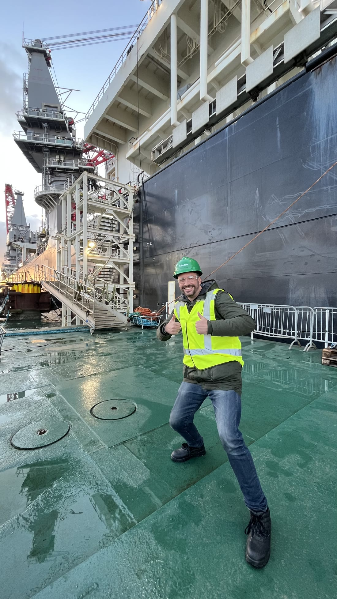
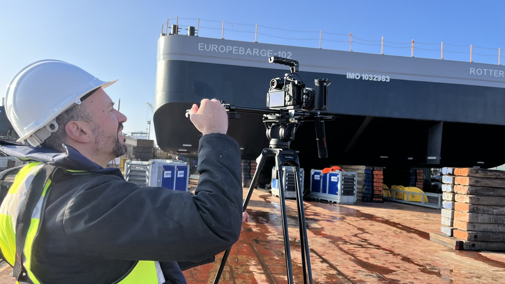

Europebarge · Maritiem / offshore · 2025
Voor Europebarge ontwikkelden we een cinematografische projectfilm rondom een complexe offshore transportoperatie. Geen standaard registratie van grote schepen, maar een verhaal over samenwerking, timing, techniek en extreme precisie.
Europebarge wilde een hoogwaardige projectfilm van een complexe offshore transportoperatie. De film moest de operatie vastleggen, expertise uitstralen, internationale klanten aanspreken en de schaal van het werk zichtbaar maken.
Veel maritieme bedrijven hebben indrukwekkend werk, maar communiceren het saai: registrerende dronebeelden, losse sfeerbeelden en weinig gevoel voor spanning of schaal. Daardoor voelt extreem specialistisch werk alsnog als gewone B-roll.
De echte vraag was dus: hoe laat je mensen voelen hoeveel expertise, timing en risicobeheersing achter zo'n operatie zit?
We benaderden de operatie als een high-end documentaire. Niet alleen groot en spectaculair, maar gecontroleerd, precies, georganiseerd en berekend.

Behind the scenes
Behind the scenes“De BeeldBrekers legden niet alleen de operatie vast, maar vooral de precisie en samenwerking erachter.”
Project Manager — Europebarge
De film liet niet alleen zien wat Europebarge doet, maar vooral hoe professioneel en gecontroleerd ze opereren. Dat verschil is groot in een sector waar vertrouwen, timing en risicobeheersing alles zijn.
Wij maken technische operaties voelbaar voor klanten, stakeholders en toekomstige medewerkers.
Plan een kennismaking!